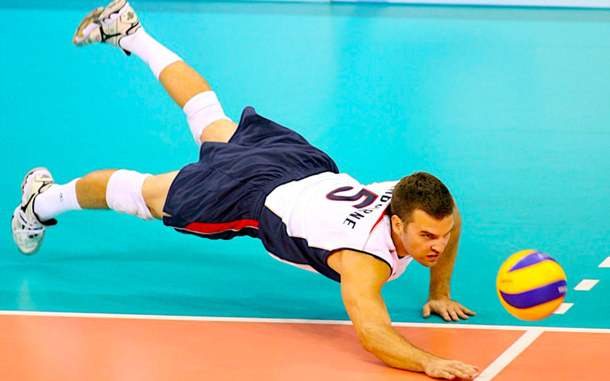
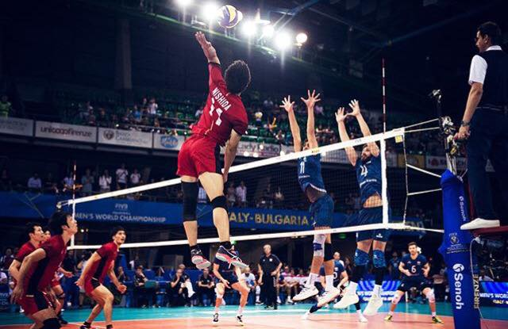
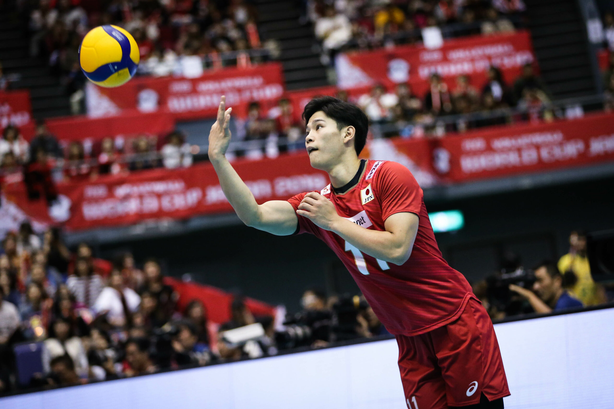
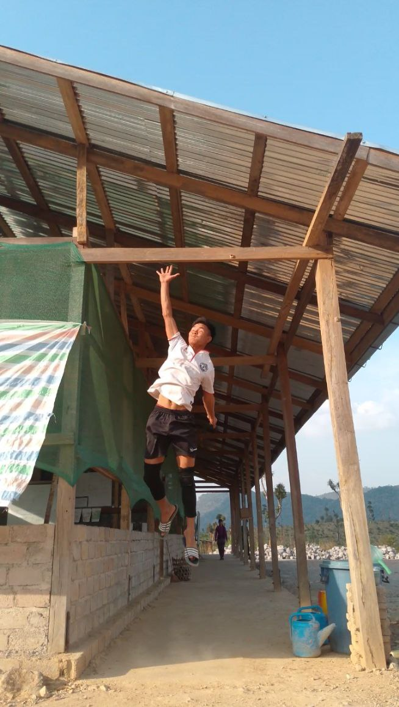
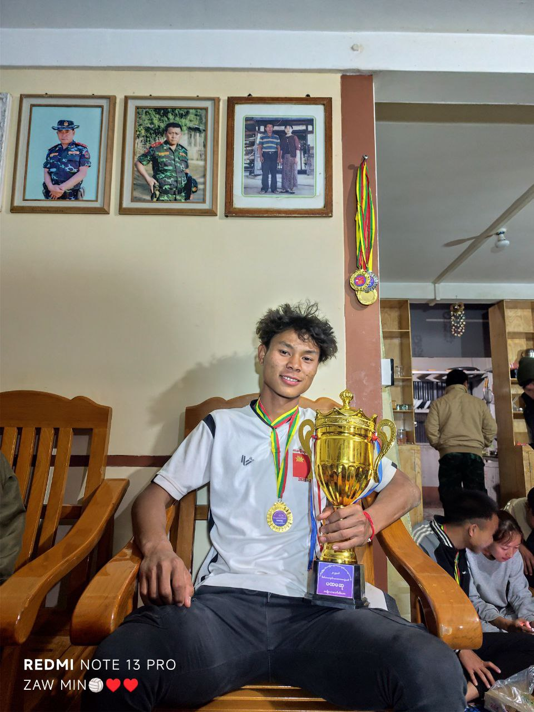
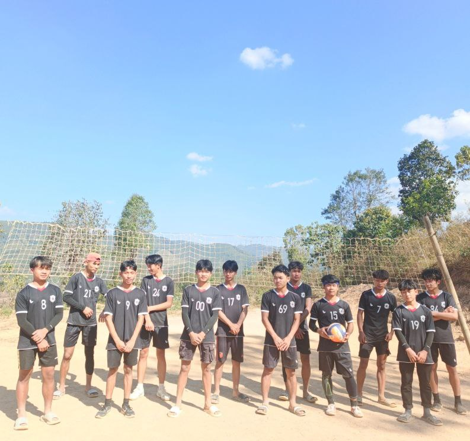

Volleyball
ဘော်လီဘောသည် အမေရိကန်၏ အကျော်ကြားဆုံး အားကစားနည်းတစ်ခုဖြစ်သောကြောင့် အိုလံပစ်အစီအစဉ်တွင် ထည့်သွင်းရန် ဆုံးဖြတ်ခဲ့သည်။ ဘော်လီဘောကို ကျွမ်းကျင်ပိုင်နိုင်စွာ ကစားရန်၊ လူတစ်ဦးသည် ရုပ်ပိုင်းဆိုင်ရာ ဖွံ့ဖြိုးတိုးတက်ရန်၊ လုံလောက်သော လက်တံခွန်အားရှိရန်၊ အမြင့်ခုန်နိုင်ခြင်း၊ ကွင်းပြင်ပေါ်တွင် လမ်းကြောင်းမှန်ပေါ်လွင်စေကာ မထင်မှတ်ထားသော အခြေအနေများအတွက် လျှပ်စီးကြောင်းများ အရှိန်ဖြင့် တုံ့ပြန်နိုင်ရမည်။ ဂိမ်းကို တည်ထောင်သူမှာ ကောလိပ်ဆရာ အမေရိကန် William Morgan ဖြစ်သည်ဟု ယူဆကြသည်။ သူက အားကစားအသစ်ကို ဖန်တီးခဲ့သူပါ။ ၎င်းသည် ကွင်း၏ တစ်ဖက်ခြမ်းတွင်ရှိသော အသင်းနှစ်သင်းကြားတွင် ဘောလုံးအား တင်းမာသောပိုက်ကွန်ပေါ်မှ ပစ်ချကာ မြေကြီးနှင့်ထိရန် ခွင့်မပြုသည့် ကစားပွဲတစ်ခုဖြစ်သည်။


Volleyball ကစားခြင်းကို နစ်သက်ရသည့် အကြောင်းရင်းများ
Volleyball ကစားခြင်းသည် ကျွန်ုပ်အတွက် စိတ်ဝင်စားဖွယ်ကောင်းပြီး ပျော်ရွှင်စေသော အားကစားတစ်မျိုး ဖြစ်ပါသည်။ အဖွဲ့လိုက်ကစားရသော အားကစားဖြစ်သောကြောင့် မိတ်ဆွေများနှင့် ပူးပေါင်းလုပ်ဆောင်ရခြင်းကို အထူးနှစ်သက်ပါသည်။
ပထမအချက်အနေဖြင့် Volleyball ကစားခြင်းသည် ကိုယ်ခန္ဓာကို ကျန်းမာသန်စွမ်းစေပါသည်။ လက်၊ ခြေ၊ ကိုယ်လုံးကို လှုပ်ရှားအသုံးပြုရသောကြောင့် ကိုယ်ခန္ဓာအင်အား တိုးတက်စေပြီး ကျန်းမာရေးကောင်းမွန်စေပါသည်။
ဒုတိယအချက်မှာ အဖွဲ့စည်းလုံးညီညွတ်မှုကို သင်ကြားပေးနိုင်ခြင်းဖြစ်ပါသည်။ အဖွဲ့သားတိုင်း တစ်ယောက်နဲ့တစ်ယောက် ကူညီပံ့ပိုးရပြီး ယုံကြည်မှုနှင့် ဆက်ဆံရေးကောင်းမွန်မှုကို တိုးတက်စေပါသည်။
နောက်ထပ်အချက်အနေဖြင့် Volleyball ကစားခြင်းသည် စိတ်ဖိစီးမှုကို လျော့နည်းစေပါသည်။ ကစားနေစဉ် ပျော်ရွှင်မှုရရှိပြီး စိတ်အပန်းဖြေစေသောကြောင့် စာလေ့လာမှုများအတွက်လည်း အားပြန်ဖြစ်စေပါသည်။
ထို့ကြောင့် Volleyball ကစားခြင်းသည် ကျန်းမာရေးကောင်းမွန်စေခြင်း၊ မိတ်ဆွေဖွဲ့စည်းမှုကောင်းစေခြင်းနှင့် စိတ်ပျော်ရွှင်မှုရရှိစေခြင်းတို့ကြောင့် ကျွန်ုပ်အနေဖြင့် အလွန်နစ်သက်ပါသည်။

ကျတော့် idol NISHADA အကြောင်း
🏐 Nishida Yūji ဆိုတာ ဘယ်သူလဲ?
Nishida Yūji က ဂျပန်နိုင်ငံသား အထင်ကရ Volleyball ကစားသမား တစ်ဦးဖြစ်ပြီး
Japan Men’s National Volleyball Team ရဲ့ အဓိကကစားသမားပါ။
👤 ကိုယ်ရေးအချက်အလက်အကျဉ်း
အမည် – Nishida Yūji (西田 有志)
မွေးသက္ကရာဇ် – ၂၀၀၀ ခုနှစ် ဇန်နဝါရီ ၃၀ ရက်
နိုင်ငံ – ဂျပန်
အရပ်အမြင့် – ခန့်မှန်းအားဖြင့် 186 cm
ကစားရာနေရာ (Position) – Opposite Spiker
🔥 ကစားပုံရဲ့ အားသာချက်များ
Jump Serve အရမ်းပြင်းထန်
Spike ချက်အားမြန်ပြီး အမြင့်ခုန်နိုင်စွမ်းကောင်း
အရေးကြီးအချိန်တွေမှာ အသင်းကို ဦးဆောင်နိုင်သူ
ဒီအချက်တွေကြောင့် Nishida ကို
👉 “Japan ရဲ့ အင်အားကြီး Spiker” လို့ ခေါ်ကြပါတယ်။
🏆 အောင်မြင်မှုများ
Japan National Team ကို ငယ်ရွယ်စဉ်ကတည်းက ရွေးချယ်ခံရ
Olympics, World Cup, VNL (Volleyball Nations League) စတဲ့ နိုင်ငံတကာပြိုင်ပွဲကြီးတွေမှာ ပါဝင်ကစား
ဂျပန်အသင်းရဲ့ အမှတ်ရစေသူ အဓိကကစားသမားတစ်ဦး
🌟 လူငယ်များအတွက် စံပြ
Nishida Yūji က
ကြိုးစားအားထုတ်မှု
ကိုယ့်ကိုယ်ကို ယုံကြည်မှု
မပျင်းမရှုပ် လေ့ကျင့်မှု
တွေကြောင့် အောင်မြင်လာတဲ့ ကစားသမားဖြစ်လို့
လူငယ် Volleyball ကစားသမားတွေ အတွက် စံပြပုဂ္ဂိုလ် ဖြစ်ပါတယ်။


စနိူက်ကျောင်းရှိ Volleyball Class အကြောင်း
ကျွန်တော်၏ကျောင်းတွင်လည်း Volleyball Class ရှိပါသည်
ကျွန်တော်၏ကျောင်းတွင် စာသင်ခန်းများအပြင် အားကစားအတန်းများလည်း ဖွင့်လှစ်ထားပါသည်။ ထိုအထဲတွင် Volleyball Class တစ်ခုလည်း ပါဝင်ပါသည်။ Volleyball Class ကို ကျောင်းသား၊ ကျောင်းသူများ စိတ်ဝင်စားစွာ တက်ရောက်ကြပါသည်။
Volleyball Class တွင် ဘောလုံးရိုက်နည်း၊ ဘောလုံးလက်ခံနည်း၊ ပို့နည်းနှင့် စည်းကမ်းများကို သင်ကြားပေးပါသည်။ ဆရာက အရင်ဆုံး အခြေခံလေ့ကျင့်ခန်းများ သင်ပေးပြီးနောက် ကစားပုံမှန်စနစ်များကို လေ့ကျင့်ခိုင်းပါသည်။ ကျွန်တော်တို့သည် အဖွဲ့လိုက် ပူးပေါင်းကစားရသောကြောင့် စည်းလုံးညီညွတ်မှုနှင့် အပြန်အလှန် ကူညီမှုတို့ကို လေ့လာရရှိပါသည်။
Volleyball ကစားခြင်းကြောင့် ကိုယ်လက်လှုပ်ရှားမှုများပြီး ကျန်းမာရေးကောင်းမွန်လာပါသည်။ ထို့အပြင် စိတ်ဓာတ်တက်ကြွလာပြီး ယုံကြည်မှုလည်း ပိုမိုတိုးတက်လာပါသည်။ ကျွန်တော်သည် Volleyball Class ကို အလွန်နှစ်သက်ပါသည်။
ကျွန်တော်တို့၏ Volleyball Class မှာရှိတဲ့ သူငယ်ချင်းများအကြောင်း
ကျွန်တော်တို့၏ Volleyball Class မှာရှိတဲ့ သူငယ်ချင်းများက အရမ်းတော်ကြပါသည်။ သူတို့သည် Volleyball ကစားရာတွင် လက်မြန်၊ ခြေလှမ်းမြန်ပြီး ဘောလုံးကို မှန်ကန်စွာ ရိုက်နိုင်ကြပါသည်။ Serve ပို့ရာတွင်လည်း အားကောင်းစွာ ပို့နိုင်ပြီး အခြားအဖွဲ့ကို အခက်အခဲဖြစ်စေပါသည်။
ထို့အပြင် သူတို့သည် ဘောလုံးလက်ခံရာတွင်လည်း ကျွမ်းကျင်ကြပါသည်။ ဘောလုံး မြန်မြန်လာသော်လည်း မကြောက်မလန့်ဘဲ အာရုံစိုက်ပြီး ကောင်းမွန်စွာ လက်ခံနိုင်ကြပါသည်။ အဖွဲ့လိုက်ကစားရာတွင်လည်း အချင်းချင်း ဆက်သွယ်ညှိနှိုင်းကာ ပူးပေါင်းဆောင်ရွက်ကြပါသည်။
သူတို့၏ ကြိုးစားအားထုတ်မှုနှင့် စိတ်အားထက်သန်မှုကြောင့် ကျွန်တော်တို့ Class သည် ပြိုင်ပွဲများတွင်လည်း အောင်မြင်မှုများ ရရှိခဲ့ပါသည်။ ထို့ကြောင့် ကျွန်တော်တို့၏ Volleyball Class မှာရှိတဲ့ ခူတေဠများကို ကျွန်တော် အလွန်ဂုဏ်ယူပါသည်။
ကျွန်တော်တို့ Volleyball Class မှာရှိတဲ့ သူငယ်ချင်းများက အရမ်းချောကြပါသည်။ သူတို့၏ မျက်နှာအပြုံးများက လန်းဆန်းသန့်ရှင်းပြီး မြင်သူတိုင်း စိတ်ချမ်းသာစေပါသည်။ အားကစားဝတ်စုံဝတ်ထားသောအခါတွင်လည်း သပ်ရပ်ကောင်းမွန်ပြီး ယုံကြည်မှုအပြည့်ရှိကြသည်ကို မြင်နိုင်ပါသည်။
သို့သော် သူတို့ကို ချောတယ်လို့ ခံစားရခြင်းမှာ မျက်နှာပေါ်က လှပမှုတစ်ခုတည်းကြောင့် မဟုတ်ပါ။ စိတ်ထားကောင်းမွန်မှု၊ အချင်းချင်းကူညီတတ်မှုနှင့် အားကစားတွင် ကြိုးစားအားထုတ်မှုတို့ကြောင့် ပိုပြီး ဆွဲဆောင်မှုရှိကြပါသည်။ အပြုံးချိုချိုနဲ့ ဖော်ရွေစွာ ပြောဆိုတတ်ကြခြင်းကြောင့်လည်း ပိုပြီး လှပသလို ခံစားရပါသည်။
ထို့ကြောင့် ကျွန်တော်တို့ Volleyball Class မှာရှိတဲ့ သူငယ်ချင်းများသည် ရုပ်ရည်သာမက စိတ်ထားနှင့် အရည်အချင်းပါ လှပချောမောကြသူများ ဖြစ်ကြပါသည်။
ကျွန်တော်တို့၏ Volleyball Class သည် အခြားကျောင်းများနှင့် ယှဉ်ပြိုင်ရာတွင် အမြဲတမ်း ပထမဆုရရှိလေ့ရှိပါသည်။ ပြိုင်ပွဲတိုင်းတွင် ကျွန်တော်တို့အဖွဲ့သားများသည် စည်းလုံးညီညွတ်စွာ ကစားကြပြီး အနိုင်ရရန် အားကြိုးမာန်တက် ကြိုးစားကြပါသည်။
သူတို့သည် နေ့စဉ်လေ့ကျင့်ခန်းများကို စနစ်တကျ လေ့ကျင့်ကြသဖြင့် ဘောလုံးရိုက်နည်း၊ လက်ခံနည်းနှင့် Serve ပို့နည်းတို့တွင် ကျွမ်းကျင်ကြပါသည်။ အဖွဲ့လိုက်ညှိနှိုင်းမှုကောင်းမွန်ခြင်းနှင့် အချင်းချင်း ယုံကြည်မှုရှိခြင်းတို့ကြောင့် ပြိုင်ဘက်များထက် ပိုမိုကောင်းမွန်စွာ ကစားနိုင်ကြပါသည်။
ပြိုင်ပွဲတွင် အခက်အခဲများ ကြုံတွေ့သော်လည်း မလျော့သွားဘဲ စိတ်ဓာတ်ခိုင်မာစွာ ဆက်လက်ကစားကြပါသည်။ ထို့ကြောင့် အခြားကျောင်းများနှင့် ယှဉ်ပြိုင်ရာတွင် ကျွန်တော်တို့၏ Volleyball Class သည် အမြဲတမ်း ပထမဆုကို ရရှိနိုင်ခြင်း ဖြစ်ပါသည်။ ကျွန်တော်တို့အဖွဲ့အားလုံးကို အလွန်ဂုဏ်ယူပါသည်။
ကျွန်တော်တို့၏ Volleyball Class သည် ကျောင်း၏ ဂုဏ်သိက္ခာကို မြှင့်တင်ပေးနိုင်သော အဖွဲ့တစ်ဖွဲ့ ဖြစ်ပါသည်။ အဖွဲ့သားများ၏ ကြိုးစားအားထုတ်မှု၊ စည်းလုံးညီညွတ်မှုနှင့် စိတ်ဓာတ်ခိုင်မာမှုတို့ကြောင့် အခြားကျောင်းများနှင့် ယှဉ်ပြိုင်ရာတွင် အမြဲတမ်း ပထမဆု ရရှိနိုင်ခြင်း ဖြစ်ပါသည်။ ထို့ကြောင့် ကျွန်တော်သည် ကျွန်တော်တို့ Volleyball Class ကို အလွန်ဂုဏ်ယူမိပြီး နောင်တွင်လည်း ဒီထက်ပိုကောင်းမွန်သော အောင်မြင်မှုများ ဆက်လက်ရရှိနိုင်မည်ဟု ယုံကြည်ပါသည်။
နိဂုံးချုပ်အားဖြင့် Volleyball သည် ကျန်းမာရေးကောင်းမွန်စေသော အားကစားတစ်မျိုးဖြစ်ပါသည်။ Volleyball ကစားခြင်းအားဖြင့် ကိုယ်လက်လှုပ်ရှားမှုများရရှိပြီး ခန္ဓာကိုယ်အားကောင်းစေပါသည်။ ထို့အပြင် အဖွဲ့လိုက်ကစားရသောကြောင့် စည်းလုံးညီညွတ်မှု၊ အပြန်အလှန်ကူညီမှုနှင့် ယုံကြည်မှုတို့ကိုလည်း သင်ယူရရှိစေပါသည်။
Volleyball သည် စိတ်ဓာတ်တက်ကြွစေပြီး စည်းကမ်းရှိမှုကိုလည်း မြှင့်တင်ပေးနိုင်ပါသည်။ ထို့ကြောင့် Volleyball သည် ကျောင်းသား၊ ကျောင်းသူများအတွက် အကျိုးရှိသော အားကစားတစ်ရပ်ဖြစ်ကြောင်း နိဂုံးချုပ်နိုင်ပါသည်။

